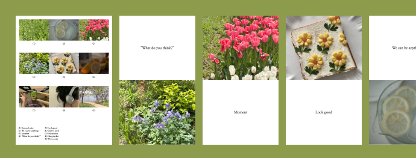

MAXI
홈
준비중
새로 나왔어요

New
매거진느낌 피드
준비 중인 콘텐츠가 없어요
ig 피드 만들기
업데이트 예정
피드자르기
업데이트 예정
슬라이드 피드
초기화
최근항목
즐겨찾기
Video
셀피
Live Photo
파노라마
고속 연사 촬영
스크린샷
움직이는 항목
RAW
최근 저장된 항목
다음 0/9
다운로드
텍스트
다운로드
텍스트
뒤집기
어떻게 저장할까요?
사진으로 저장
영상으로 저장
모두 저장
취소
취소
확인
취소
확인
저장 완료